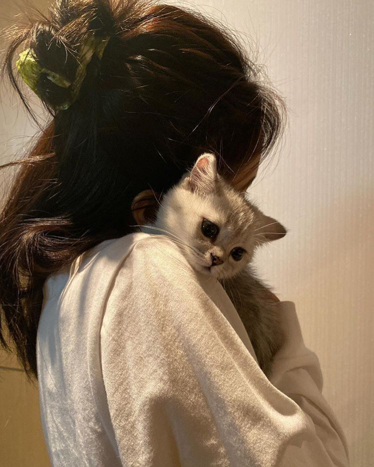

Why Adopt a Cat 🐾
Adopting a cat gives a homeless animal a second chance at life. Many cats in shelters are loving, healthy, and just waiting for a caring home.
💛 Emotional Benefits
Cats provide comfort and companionship. Their calm nature can reduce stress and bring peace to your daily life.
✔ Reasons to Adopt
- Save a life
- Lower adoption costs
- Many cats are already litter-trained